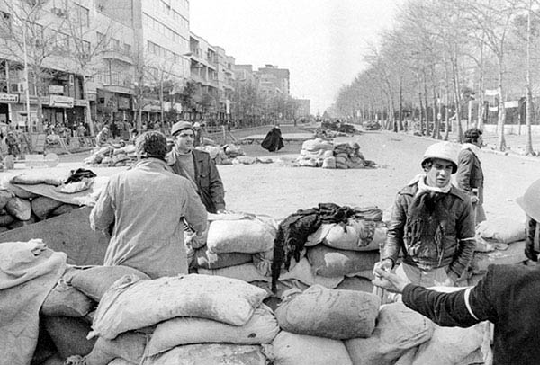

Establishes the deep structural foundations of clerical autonomy — the Safavid settlement, the Usuli triumph — revealing how centuries of institutional development created the preconditions for revolution.